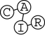
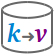

Research
Information Retrieval and Search
Plagiarism Detection
[2005 - today]
Technology for automated plagiarism detection.
[project] [service] [demo: writing process] [video]
Technology for automated plagiarism detection.
[project] [service] [demo: writing process] [video]
Retrieval Models
[2011 - 2013]
Interactive map to overview and compare the characteristics of well-known retrieval models.
Interactive map to overview and compare the characteristics of well-known retrieval models.
Query Segmentation
[2010 - 2013]
Second-guess the user’s intent from a search query.
[project] [demo] [api]
Second-guess the user’s intent from a search query.
[project] [demo] [api]
Wikipedia Fingerprinting
[2007]
Search engine implementing full text queries against Wikipedia based on fingerprinting.
Search engine implementing full text queries against Wikipedia based on fingerprinting.
BAT
[2005 - 2006]
Browser extension to facilitate the accessibility of Web pages for the visually impaired.
Browser extension to facilitate the accessibility of Web pages for the visually impaired.
Natural Language Processing and Computational Linguistics
ArguAna for the Web
[2016 - today]
Argumentation analysis for the web.
[project] [service: argument search] [api]
Argumentation analysis for the web.
[project] [service: argument search] [api]
Market Forecast
[2005 - 2006]
Extraction and summarization of market forecast statements for a user-specified market.
Extraction and summarization of market forecast statements for a user-specified market.
Data Mining and Machine Learning
Digital Engineering
[2010 - today]
Data mining in artificially generated data to support modeling and simulation tasks.
Data mining in artificially generated data to support modeling and simulation tasks.
Wikipedia Vandalism
[2007 - today]
Analysis and detection of vandalism on Wikipedia.
[project] [service: spatio-temporal analysis]
Analysis and detection of vandalism on Wikipedia.
[project] [service: spatio-temporal analysis]

Software Engineering and Tool Development
Webis@Github
[2013 - today]
Webis github account that hosts the source code for reproducing our research.
Webis github account that hosts the source code for reproducing our research.
